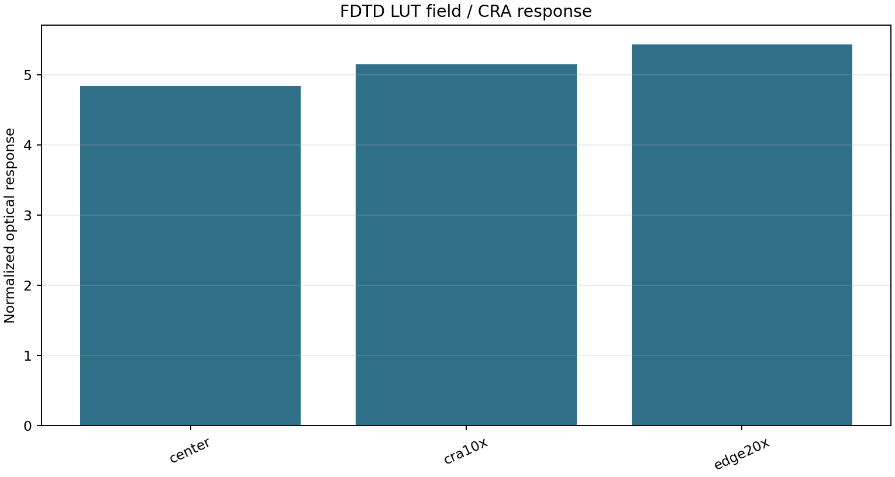
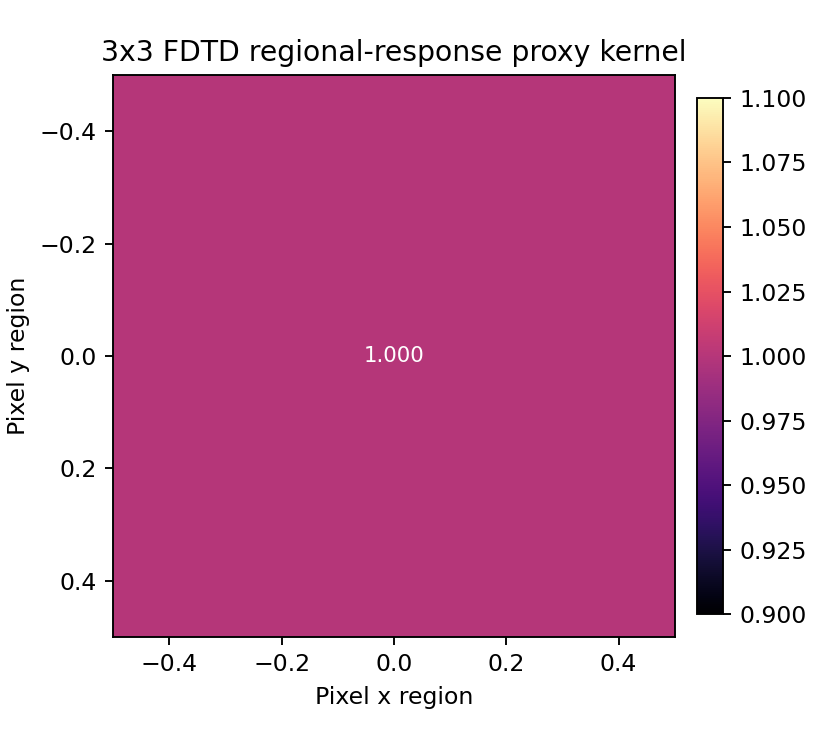
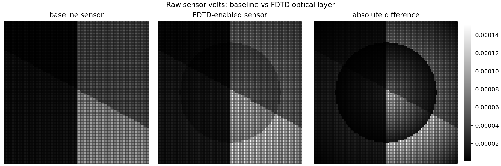
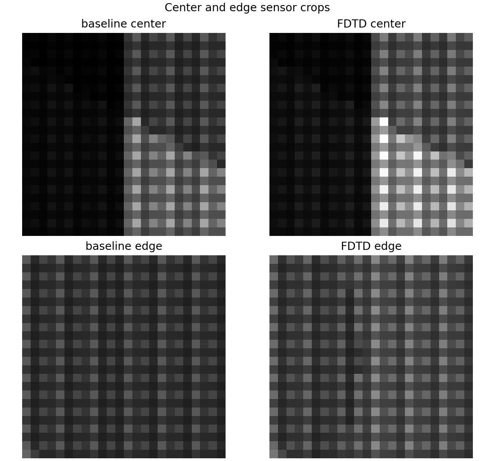
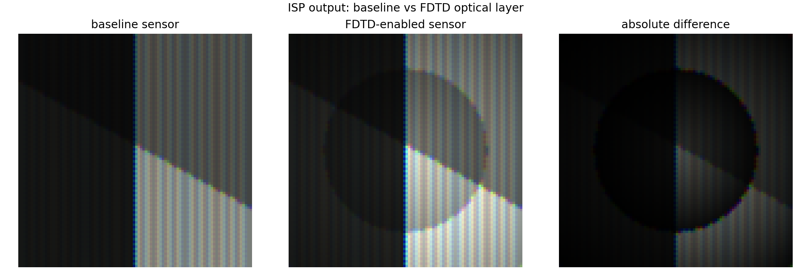
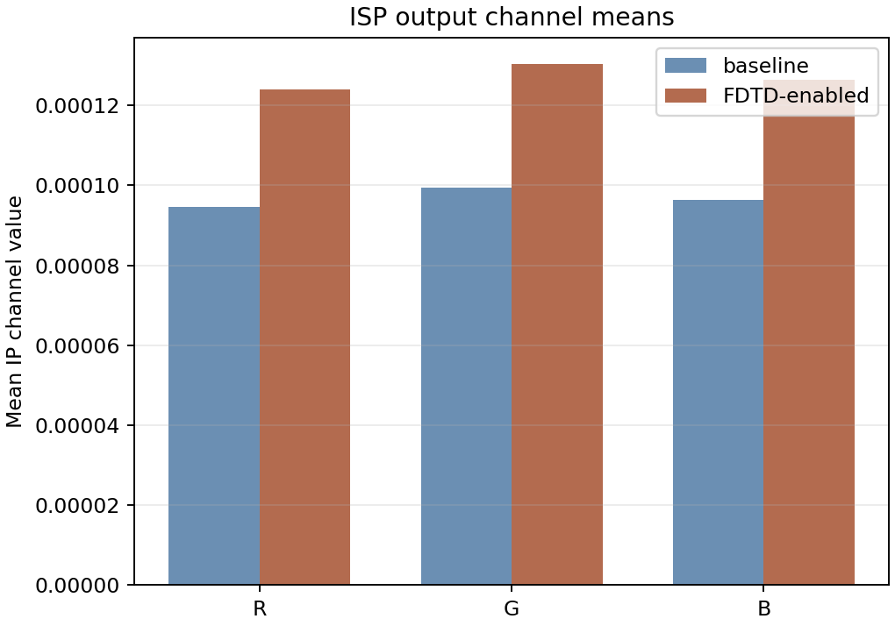

FDTD-Informed Sensor Block Report
This report verifies the Phase 1-5 implementation path: LUT ingestion, QE/CRA/field modeling, 3x3 crosstalk, sensor runtime integration, and image evidence through ISP output.
Executive Summary
Source: Using external FDTD repo LUT.
Physics report: run python tools/render_fdtd_sensor_physics_report.py and open reports/fdtd_sensor/physics_validation_report.html.
Physics Sanity Gate
This integration report proves the data path. The physics gate separately checks cos^4 RI, energy bounds, OCL shift direction, wavelength coverage, symmetry coverage, convergence metadata, and crosstalk locality.
Current status: WARN. edge20x response exceeds bare cos^4 by >20%; this can be valid with microlens/OCL concentration but needs calibration evidence; cra10x response exceeds bare cos^4 by >20%; this can be valid with microlens/OCL concentration but needs calibration evidence; edge20x response exceeds bare cos^4 by >20%; this can be valid with microlens/OCL concentration but needs calibration evidence; cra10x response exceeds bare cos^4 by >20%; this can be valid with microlens/OCL concentration but needs calibration evidence; edge20x response exceeds bare cos^4 by >20%; this can be valid with microlens/OCL concentration but needs calibration evidence; no uncompensated/compensated OCL pair available; no +/- CRA mirror pairs available for symmetry validation; no regional crosstalk kernel available; FDTD report is grid-qualified but not full resolution/time/PML convergence
Important Boundary
The current FDTD DB is an optical absorption / regional response proxy. It improves the optical sensor block model for microlens/CFA/Si-stack response, CRA rolloff, field shading, and crosstalk. It is not a TCAD carrier-transport model and should not be presented as full photodiode charge-collection physics.
Engineering caution: the current 3x3 smoke LUT regional responses are nearly uniform under the available illumination setup. That is useful for verifying data flow, but it is not yet a product-grade localized optical crosstalk PSF. The simulator exposes crosstalk_strength; this report uses 0.25 to avoid overstating that smoke LUT as a final crosstalk model.
Architecture
FDTD DB And LUT Validation
| LUT path | /Users/seongcheoljeong/FDTD/runs/convergence_cra3_rgb_r84_gridsnap_quant/camera_lut.json |
|---|---|
| Schema | camera_supercell_optical_lut_v2 |
| Mode | split-pd-1x1 |
| Wavelengths | 450.0, 550.0, 650.0 |
| Cases | center, cra10x, edge20x |
| Rows | summary=9, long=18 |
| Validation issues | none |

3x3 Crosstalk Evidence
The regional-response rows are converted to a normalized 3x3 optical crosstalk proxy kernel. The kernel is applied after spatial integration and before voltage/noise/ADC logic when enabled.

Sensor Volts Evidence
The same edge-rich optical image was computed with the baseline sensor and with the FDTD optical layer enabled. Existing voltage/noise behavior remains downstream of the optional optical layer.

| Sensor MAE | 2.23172e-05 |
|---|---|
| Sensor max abs | 0.000151916 |
| Sensor normalized MAE | 0.0813582 |
| Center mean ratio | 1.41825 |
| Edge mean ratio | 1.31936 |

ISP Output Evidence
The FDTD layer propagates through the normal IP path, so ISP-visible differences can be inspected without changing IP algorithms.


| IP MAE | 3.01141e-05 |
|---|---|
| IP max abs | 0.000158644 |
| IP normalized MAE | 0.109782 |
Verification Result
Phase 1-5 is implemented as an optional FDTD-informed sensor layer. The default sensor path is unchanged when no FDTD config is attached. The report demonstrates LUT ingestion, field/CRA response, crosstalk, raw sensor impact, center/edge evidence, and ISP-output impact.